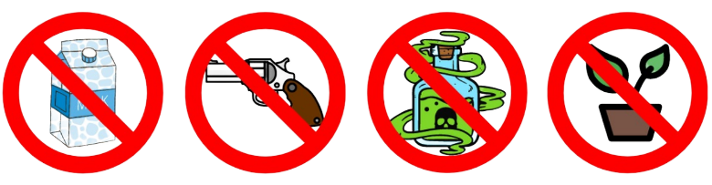
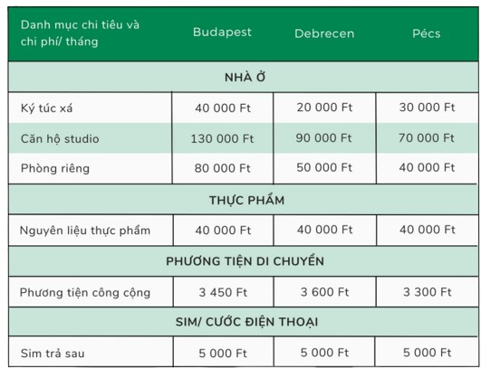
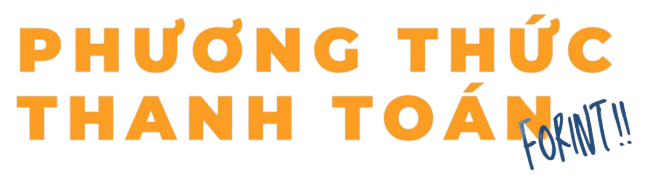
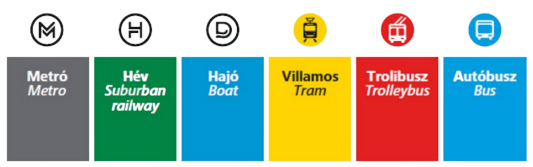
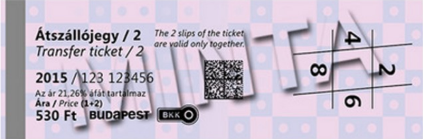

Thông tin chung về Du học Hungary
Tùy theo khả năng tài chính và sở thích mà bạn có thể chọn thuê cho mình
một căn hộ riêng, một studio
hoặc một phòng riêng trong một căn hộ nhiều phòng ngủ (shared
apartment).
Có 2 hình thức thuê nhà chính:
Nếu bạn là sinh viên du học theo học bổng Hiệp định của chính phủ thì sẽ được hỗ trợ một vị trí trong ký túc xá với giá 40 000 HUF (theo chính sách hiện hành) và được sử dụng điện nước thoải mái. Bạn có thể lựa chọn ở phòng 4 người và phòng 2 người khi ở ký túc xá. Nếu bạn là sinh viên du học tự túc, chi phí thuê phòng ký túc xá sẽ có sự chênh lệch đôi chút về trường mà bạn theo học.
Thuê căn hộ lớn nhiều phòng ngủ với các không gian sinh hoạt chung để có thể ở ghép (collocation), mỗi người có một phòng ngủ riêng, mọi người dùng chung nhà tắm, phòng khách, nhà vệ sinh và nhà bếp.
Thuê studioThuê riêng 1 phòng có nhà bếp phòng ngủ, nhà vệ sinh tích hựp (studio).
Thuê homestayThuê 1 phòng trong nhà của người bản địa (homestay), nghĩa là có phòng riêng cho mình, còn những phòng khác dùng chung với chủ nhà. Đây là một hình thức hợp lý cho các bạn sinh viên muốn học hỏi về văn hóa Hungary.
Thuê nhà tư nhân ngoài tiền thuê nhà các bạn phải trả các chi phí hàng tháng bao gồm điện, nước, sưởi, internet và chi phí chung. Tùy theo nhu cầu thuê phòng riêng/studio/nguyên căn mà chi phí sẽ cao hơn ở ký túc xá.
Ưu điểm và nhược điểmKhi quyết định thuê phòng ở ngoài thì chắc chắn chi phí sẽ cao hơn so với việc ở ký túc xá, nhưng bù lại bạn sẽ có một không gian riêng tư, yên tĩnh, phù hợp với nhu cầu và sở thích của bản thân và sẽ ở cùng với bạn cùng phòng mong muốn. Nếu bạn là du học sinh theo học bổng Hiệp định, với chi phí mà bạn được hỗ trợ từ hai chính phủ thì giá để thuê phòng ngoài khá phù hợp và có thể đáp ứng được.
Để thuê nhà tư nhân bạn có thể tự tìm kiếm nhà qua các trang mạng, các nhóm trên Facebook rồi trực tiếp làm hợp đồng thuê với chủ nhà.
Bạn có thể chọn thuê nhà có sẵn đồ đạc (bàn tủ, ghế, giường...) để có thể dọn ngay vào ở hoặc thuê nhà trống, bạn sẽ tự mua tất cả các dụng cụ trong nhà theo ý muốn.
Một số diễn đàn nhà ở, các group trên Facebook, Marketplace chỉ cần gõ các từ khóa như: Rent a flat/room in Budapest, hàng loạt gợi ý sẽ xuất hiện. Ở đây có hình ảnh nhà, giá cả, địa chỉ đầy đủ và thông tin liên lạc với người cho thuê để bạn dễ dàng liên lạc. Tuy nhiên, đây là trang rao vặt tự do nên bạn cần rất cẩn thận khi định thuê nhà thông qua web này, đặc biệt là các nhà/phòng mà yêu cầu chuyển tiền, thu tiền đặt cọc để được đến xem nhà.
Ngoài ra bạn cũng có thể lên Facebook page của Hội Sinh viên Việt Nam tại Hungary để đăng thông tin tìm nhà hoặc tìm người ở chung ở ghép. Đây là kênh thông tin khá an toàn và hiệu quả.
Khi bạn đã tìm được một nơi ở ưng ý, bước tiếp theo là kí hợp đồng. Các điều khoản trong hợp đồng, bạn phải cân nhắc và đọc thật kĩ, nếu có bất kì điều khoản gì bạn cảm thấy còn chưa rõ ràng hãy tìm hiểu kĩ trước khi đặt bút kí hợp đồng.
Ngoài ra lúc thuê nhà bạn phải kí séc tiền đặt cọc (deposit) tầm khoảng từ 1-2 tháng tiền nhà cho chủ nhà. Số tiền này để phòng khi bạn có làm hư hại nhà cửa thì chủ nhà sẽ khấu trừ hoặc trong trường hợp bạn phá vỡ hợp đồng, tự kí chuyển đi trước khi hợp đồng kết thúc, số tiền cọc này bạn sẽ mất.
Trong trường hợp không có bất kì vấn đề gì xảy ra trong quá trình thuê, khoản tiền đặt cọc ban đầu (deposit) chủ nhà sẽ phải trả lại đầy đủ cho bạn khi kết thúc hợp đồng.
Khi kí hợp đồng nhà thì người thuê nhà và chủ nhà sẽ làm Biên bản hiện trạng nhà để kiểm tra và ghi chép lại tình trạng của các nội thất và thiết bị trong căn nhà. Khi trả nhà, bạn cùng với chủ nhà sẽ làm một biên bản hiện trạng nhà trả, sẽ được đem ra đối chiếu lại tình trạng nhà cùng các vật dụng, để nếu có hư hỏng gì mà chủ nhà không chịu trách nhiệm sửa chữa thì người thuê nhà phải chịu trách nhiệm. Vì thế các bạn nên để ý và kiểm tra cẩn thận tình trạng nhà trước lúc thuê và có ý thức giữ gìn tốt vì khoản tiền khấu trừ có thể cũng không hề nhỏ.
Ngoài việc xếp hết tất cả tài liệu vào một bìa hồ sơ, các bạn cũng nên phân loại rõ ràng ra theo từng phần riêng biệt:
Các giấy tờ quan trọng bao gồm:
Nếu bạn học theo hướng ghi chép ra giấy thì có thể chuẩn bị một ít đồ dùng học tập như thế này để dễ dàng hơn khi mới đến đây, sau đó các bạn có thể tìm mua ở các shop nhé (giá dĩ nhiên sẽ khá cao so với Việt Nam)
Các bạn nên mang theo người tối thiểu khoảng 1500-2000 USD hoặc 1500-2000 EUR để phòng thân, mua sắm đồ đạc ban đầu khi mới đến Hungary, cách ly, ăn uống trong khoảng thời gian đầu chưa có học bổng cả 2 bên.
Yên tâm đi! Vì sau khi có thẻ ngân hàng thì bạn đã nhận được học
bổng phía chính phủ Hungary (83 700 HUF - bao gồm cả tiền ở cho bạn
không đăng kí ở kí túc xá.
Sau khoảng 3 tháng khi bạn gửi báo
cáo đã nhập học tại Hungary thì Cục hợp tác quốc tế- Bộ giáo dục sẽ
cấp học bổng kỳ đầu cho bạn (khoảng 1 400 USD, các kỳ tiếp theo là
khoảng 2 000 USD).
Chi phí ăn ở tại Hungary cũng khá rẻ so với các nước trong khối EU khác nên các bạn đừng quá lo lắng và không cần mang quá nhiều tiền theo người, luật giới hạn là không được mang quá 10 000 USD tiền mặt.
Thuốc đặc trị chỉ mua được theo đơn bác sĩ, do vậy các bạn nên chuẩn
bị trước những thuốc cần thiết trong trường hợp khẩn cấp: thuốc đau
đầu, hạ sốt, kháng sinh, đau bụng...
Khí hậu ở đây cũng khá khô nên bạn mang theo ích kem dưỡng ẩm để
tránh tình trạng khô da, bong tróc. Cuối cùng đừng quên mang
nước/gel hoặc khăn ướt sát khuẩn theo người!
Không nên mang nhiều quần áo mùa đông do đồ mùa đông ở Việt Nam mang
sang không đủ ấm, không chống được thời tiết -15 độ C đến -10 độ C
vào mùa đông ở Hungary.
Nên mang lượng quần áo vừa phải vì các bạn có thể mua quần áo hợp
thời trang hơn ở Hungary với giá không quá đắt và khá chất lượng,
đặc biệt trong những đợt sale lớn.
Bạn có thể mang một chiếc dù nhỏ và dép tông (vì hai món này ở Việt Nam chất lượng tốt và giá cả khá là phải chăng, mẫu mã đa dạng)
Bạn có thể mang bấm dũa móng tay, mỹ phẩm (mỹ phẩm ở đây không thiếu nhưng nếu bạn có làn da nhạy cảm và chỉ quen dùng một vài sản phẩm châu Á thì cũng nên thủ trong vali để sử dụng trong thời gian đầu).
Nên mang thêm một chiếc kính cận từ Việt Nam do cắt kính, đo kính ở đây khá đắt (khoảng 200 USD - khoảng hơn 4 triệu VND cho một chiếc kính cận loại bình thường).
Ổ cắm điện: Do tất cả các ổ điện ở đây đều là ổ cắm chân tròn, các bạn nên mang ít nhất một ổ chuyển đổi chân cắm bẹt sang đây để tránh những trường hợp mang đồ sang nhưng không dùng được.
Laptop cá nhân: nên mang một chiếc và phải mang theo hành lý xách tay, các đồ dùng có pin cũng phải để trong hành lý xách tay do đây là quy định của hàng không.
Tránh mang các đồ sau chắc chắn sẽ bị tịch thu và phạt tiền tiêu hủy tại sân bay (ngoài chất cấm như ma túy hay vũ khí): Thuốc lào không được mang theo (các bạn sẽ bị phạt hơn 500 USD để tiêu hủy tại sân bay nếu mang theo), các đồ sắc nhọn không được mang theo hành lý xách tay, các sản phẩm từ thịt tươi sống, sữa tươi, các loại hạt cây tươi có thể nảy mầm....
Chào mừng tất cả các bạn đến với đất nước Hungary xinh đẹp, cổ kính nằm ở Trung Âu. Hungary được mệnh danh là trái tim của Châu Âu quả không sai chút nào! Trước khi có thể tự do khám phá vùng đất Hungary, bạn sẽ phải trải qua 3 bước thủ tục sau để có thể nhập cảnh.
Sau khi xuống khỏi máy bay, các bạn sẽ được đưa vào khu vực kiểm tra nhập cảnh. Tại đây, bạn sẽ phải xếp hàng và xuất trình các giấy tờ sau:
Nhân viên hải quan cũng có thể hỏi bạn một số câu cơ bản như: Bạn đến Hungary làm gì? Bạn ở thành phố nào? Bạn học trường gì? ... Bạn chỉ cần bình tĩnh và trả lời các câu hỏi của hải quan.
Sau khi làm thủ tục nhập cảnh xong, bạn sẽ vào khu vực băng chuyền hành lý. Ở đây sẽ có hai băng chuyền với màn hình hiển thị số hiệu tương ứng. Bạn chỉ cần quan sát kỹ số hiệu máy bay trên bảng để nhận hành lý ở băng chuyền tương ứng. Bạn cần kiểm tra kỹ hành lý để không bỏ quên hành lý. Nếu bạn bị thất lạc hành lý, hãy tham khảo Mục 3.3.4 tại Phần II của Cẩm nang này để biết thêm thông tin.
Sau khi lấy hành lý và di chuyển đến cửa ra, bạn sẽ gặp các bàn khai báo hành lý của nhân viên hải quan. Nhân viên hải quan sẽ yêu cầu bạn mở hành lý bạn ra kiểm tra. Bạn sẽ chỉ phải khai báo hải quan và trả thuế khi mang quá 10 000 EUR hoặc các sản phẩm như rượu bia, thuốc lá, ...
Tại sân bay có cung cấp dịch vụ wifi miễn phí trong vòng 4 tiếng đối với mỗi địa chỉ email đăng ký. Bạn có thể sử dụng để liên lạc về Việt Nam hoặc gọi các dịch vụ đưa đón. Hiện giờ bạn không thể mua sim tại sân bay. Bạn cần di chuyển về trung tâm thành phố và mua sim tại điểm đăng ký của các nhà mạng.
Tại nhà ga 2B của sân bay có cửa hàng SPAR - một trong những chuỗi siêu thị lớn nhất ở Hungary. Tại đây bạn có thể mua một số thực phẩm như rau củ, bánh mỳ, gạo, nước uống, v.v. Những bạn chuẩn bị cách ly và những bạn di chuyển về tỉnh xa thì nên mua đồ ăn tạm dọc đường vì ngày đầu tiên đến các khu vực cách ly thường vẫn chưa chuẩn bị kịp đồ ăn cho mình. Cửa hàng chấp nhận thanh toán bằng Forint, Euro và thẻ thanh toán quốc tế (ISA, Mastercard).
Các bạn nên mang theo một lượng tiền mặt để giúp các bạn chi tiêu trong
những tháng đầu tiên chưa nhận được học bổng. Đơn vị tiền của Hungary là
Forint (HUF), các bạn nên mang theo tiền EUR hoặc USD (khuyến khích
EUR). Không nên mang Forint từ Việt Nam vì tỷ giá đổi Forint ở Việt Nam
không tốt bằng ở Hungary. Khuyến khích mang theo các đồng nhỏ để dễ chi
tiêu.
Sau khi xuống sân bay, các bạn cần đổi EUR hoặc USD sang tiền Forint để
chi tiêu. Có thể đổi tiền tại quầy InterChange hoặc một số cây ATM rút
tiền quốc tế từ thẻ thanh toán. Tuy nhiên các bạn không nên đổi hay rút
tiền ở sân bay vì tỷ giá ở sân bay khá thấp. Các bạn nên vào trung tâm
thành phố để đổi được tỷ giá tốt hơn. Nếu có thể thì hãy nhờ người đưa
đón mình đổi trước một lượng tiền nhất định. Bạn nào có thẻ thanh toán
quốc tế thì có thể thanh toán trực tiếp bằng thẻ luôn.
Nếu bạn đã đặt phương tiện đi lại hoặc có người đến đón, sau khi ra cổng
sân ga sẽ có khu vực để bạn đợi. Thường tại đây, người đón bạn sẽ giơ
bảng tên bạn, khu vực bạn sẽ về, tên trường (một số trường có đặt xe hộ
sinh viên)
Nếu bạn không thấy người đón bạn thì bạn có thể sử dụng internet
để liên lạc. Hạn chế xin thông tin liên lạc bằng điện thoại hoặc email
vì khi sang bạn chưa có sim số và thời gian phản hồi email thường rất
lâu.
Nếu bạn di chuyển tự túc, bạn có thể tham khảo thông tin một số phương
thức di chuyển ở Mục 3.4. của Phần II dưới đây. Tuy nhiên tuyệt đối
tránh các tài xế taxi mời chào ở cổng nhà ga. Phần lớn đều là taxi tự
do. Bạn sẽ bị bắt thanh toán một số tiền rất lớn.
Đây là phương thức di chuyển kinh tế nhất nhưng đồng thời cũng vất vả nhất. Bạn có thể mua vé tại quầy dịch vụ hoặc các máy bán vé tự động của BKK (Budapesti Közlekedési Központ: Trung tâm Vận tải Budapest). Bạn có thể thanh toán bằng thẻ tín dụng, tiền mặt Forint hoặc Euro. Riêng với máy bán vé tự động, máy sẽ không nhận tiền EUR và chỉ nhận tiền giấy không quá 2,000 HUF. Với mỗi lần di chuyển trên một phương tiện (bao gồm bus, tram, metro) đều cần phải kích hoạt một vé lượt (single ticket) mới. Tại sân bay sẽ có 2 tuyến bus chính.
Tại sân bay có cung cấp dịch vụ Shuttle MiniBUD giúp di chuyển trực
tiếp đến nơi ở của bạn. Đây là phương án chi phí cao hơn nhưng sẽ
thoải mái hơn so với xe bus công cộng. Mỗi xe có khoảng 10 người đổ
lại bao gồm cả hành lý. Bạn sẽ phải đợi xe đủ người thì mới có thể
khởi hành. Xe sẽ dừng lần lượt tại từng điểm đến của hành khách theo
lộ trình thích hợp. Thế nên bạn có thể đợi hơi lâu mới có thể đến
nơi ở của mình.
Các bạn có thể tham khảo giá vé hoặc
đăng ký online tại đây: https://www.minibud.hu/. Ngoài ra, bạn có
thể đăng ký trực tiếp tại các quầy Shuttle MiniBUD ở cả hai nhà ga
2A và 2B. Khuyến khích cho các đoàn di chuyển đông người.
Giá vé tham khảo: 1 800-4 900 HUF (Giá vé này không phụ thuộc điểm đến mà phụ thuộc số người đăng ký. Ví dụ nếu có một người đăng ký thì giá vé là 4 900 HUF, nếu có hai người đăng ký thì giá vé là 6 000 HUF)
Đây là phương pháp di chuyển tiện lợi nhất khi bạn lần đầu sang Hungary với nhiều hành lý. Chỉ nên sử dụng taxi của các hãng lớn như Fötaxi, Bọlt, ... ngay các trạm ngoài sân bay.
Đây là hãng taxi hợp tác độc quyền với sân bay. Bạn có thể đăng ký xe tại các cabin của hãng trong sân ga. Sau đó xe sẽ đến đón bạn và thả bạn tại điểm đến đã đăng ký. Bạn cần thanh toán trực tiếp cho tài xế bằng tiền mặt hoặc thẻ thanh toán quốc tế. Giá xe tham khảo: 7 000-9 000 HUF (tùy điểm đến trong Budapest).
Đây là hãng taxi đặt qua điện thoại. Bạn cần sử dụng số điện thoại Hungary để có thể đăng ký tài khoản và đặt xe. Khi đặt xe khoảng giá ước tính sẽ được hiển thị trên màn hình, bạn có thể thanh toán trực tiếp bằng thẻ thanh toán ở trong ứng dụng hoặc bằng tiền mặt cho tài xế. Giá xe tham khảo: 5 000-8 000 HUF (tùy điểm đến). Tham khảo tuyến đường và giá cả tại: https://bolt.eu/en/. Có thể tải xuống tải Appstore và Play Store.
Để có thể di chuyển đến các tỉnh khác, tàu là phương tiện công cộng phổ
biến nhất. Bạn cần di chuyển vào trung tâm thành phố để có thể tiếp cận
các ga tàu. Trong hành trình xin chú ý hành lý đề phòng mất cắp. Hãy ưu
tiên các loại vali kéo để tiện di chuyển giữa các loại phương tiện. Tại
Budapest, có nhiều nhà ga nhỏ nhưng có ba nhà ga chính có thể di chuyển
đến hầu hết các tỉnh ở Hungary.
Các bạn có thể tham khảo lịch trình và giá vé đến tất cả các tỉnh tại
đây: https://jegy.mav.hu/ Déli pályaudvar (Nhà ga Déli) Có thể đi đến
các tỉnh Kaposvár, Győr, Dunaújváros, Veszprém, ... Có thể di chuyển đến
bằng Metro M2. Keleti pályaudvar (Nhà ga Keleti) Có thể đi đến các tỉnh
Pécs, Eger, Gödöllő, Kaposvár, Gyöngyös, Győr, Debrecen, Miskolc,
Nyíregyháza, Sopron, ... Có thể di chuyển đến bằng Metro M2 và M4.
Nyugati pályaudvar (Nhà ga Nyugati) Có thể đi đến các tỉnh Szeged,
Kecskemét, Debrecen, Nyíregyháza, ... Có thể di chuyển đến bằng Metro M3
(Hiện giờ Metro M3 đang sửa chữa, bạn có thể di chuyển bằng tuyến xe bus
nhanh M3)
Xe khách đi về các thành phố khác ngoài Budapest có điểm đưa đón ở các nhà ga, bến xe lớn. Bạn cần cần di chuyển trực tiếp đến các bến xe để có thể bắt xe. Một trong những hãng xe phổ biến nhất là Volánbusz bởi dịch vụ và độ phủ rộng của hãng. Bạn có thể mua vé trực tiếp tại bến hoặc đặt trước online.
Bạn có thể tham khảo lịch trình di chuyển và đặt vé online tại đây: https://www.volanbusz.hu/en. Lưu ý, có một số chuyến tần suất khá thưa nên cần sắp xếp thời gian hợp lý.
Đây là phương án tiện lợi nhất để di chuyển vì bạn sẽ không cần chuyển tàu xe nhiều, đồng thời không phải vận chuyển hành lý trên một chặng đường dài. Đối với xe khách này, bạn cần liên hệ với hãng để đặt xe online. Bạn cần cung cấp ngày giờ, số hiệu chuyến bay sẽ di chuyển. Dựa trên thông tin đăng ký, hãng sẽ sắp xếp xe tại sân bay để để đưa bạn thẳng về tỉnh. Tài xế sẽ cầm biển tên đợi bạn tại sân bay. Giá vé khoảng: 10 000 HUF (Tùy thuộc vào số lượng người đăng ký di chuyển hôm đó, số lượng hành lý, chính sách hãng mà giá vé tăng hay giảm).
Một số hãng xe được gợi ý bởi các trường đại học:
Một số trường có hợp đồng với một số hãng nhất định. Bạn có thể liên hệ trực tiếp với trường để hỏi thêm về phương tiện đi lại. Hãy tìm hiểu kỹ trước khi đặt xe. Cần liên hệ trước với hãng để hỏi kỹ thông tin về giá vé, phí hành lý, thời gian đợi, phương thức liên lạc tại sân bay, điểm đến cuối, phương thức thanh toán, ...
Trong thời kì dịch bệnh Covid, các bạn sinh viên sau khi nhập cảnh sẽ phải cách ly bắt buộc 10 ngày tại địa điểm đã được đăng ký trước. Các bạn cần di chuyển ngay lập tức về địa điểm cách ly và dán niêm phong cửa. Cảnh sát có thể kiểm tra căn hộ ngay ngày hôm sau. Nếu bạn không có mặt tại căn hộ, bạn có thể bị phạt lên đến 150 000 HUF.
Đối với các bạn ở kí túc xá
Đối với các bạn thuê nhà
Budapest
Szeged
Pécs
Miskolc
Debrecen
Budapest
Szeged
Pécs
Miskolc
Debrecen
Bên cạnh tập trung vào việc học, sức khoẻ tinh thần và thể chất cũng rất quan trọng đối với các bạn sinh viên, đảm bảo lối sống lành mạnh. Hầu hết các cơ sở giáo dục của Hungary cung cấp cơ hội để chơi thể thao theo nhóm hoặc cá nhân.
Có nhiều sự lựa chọn cho bạn như bơi lội, gym, cầu lông, bóng bàn, cờ vua... Trường BME có hồ bơi và trung tâm thể thao riêng, bạn có thể đăng kí tham gia hoặc thuê sân theo giờ. Ngoài ra, cộng đồng người Việt tại Hungary còn có các câu lạc bộ như cầu lông, bóng đá, bóng bàn, cờ vua, tennis, golf tại Budapest và các thành phố khác.
Ở các công viên cũng có các khu tập thể dục công cộng được trang bị những bộ dụng cụ thể thao cơ bản như xà ngang, xà đơn, gập bụng và chạy bộ cũng là môn thể thao được ưa thích tại Hungary. Bạn cũng có thể thuê xe đạp với giá 500 HUF/ tháng để rèn luyện sức khoẻ thường ngày.
Nhìn chung, chi phí sinh hoạt ở Hungary sẽ rẻ hơn so với những nước Châu Âu khác. Cụ thể, tùy theo địa điểm học tập và sinh sống sẽ có mức chi phí khác nhau giữa thành phố, ví dụ như giá thuê nhà ở thủ đô Budapest sẽ đắt hơn khoảng 1/3 đến gấp đôi so với giá thuê nhà ở những tỉnh khác.
*Bảng chi phí tham khảo thông tin tại website Study in Hungary và trải nghiệm thực tế của sinh viên Việt Nam tại Hungary (năm 2021)
Như vậy, trung bình chi phí cho những nhu cầu cơ bản trong một tháng cho sinh viên tại Budapest là khoảng 128 450 HUF (khi thuê phòng riêng), cao hơn so với mức chi tiêu ở những tỉnh khác khoảng 30 000- 40 000 HUF.
Hầu hết các siêu thị, cửa hàng ở Hungary đều có thể thanh toán bằng thẻ ngân hàng và tiền mặt, ở một số siêu thị lớn như Interspar, Tesco bạn có thể thanh toán bằng Euro thay cho Forint (với tỷ giá rất thấp, khoảng 350-360 Forint = 1 Euro) (năm 2021). Tuy nhiên ở một số khu vực chợ hay cửa hàng người Việt bạn chỉ có thể thanh toán bằng tiền mặt (Forint).
Các loại thẻ thường được sử dụng phổ biến ở Hungary là Mastercard và Visa. Cả hai loại thẻ này đều là thẻ thanh toán quốc tế được sử dụng trên phạm vi toàn thế giới, cũng như có hỗ trợ mua hàng online mà không cần qua trung gian. Và hai loại thẻ này đều được hầu hết các ngân hàng ở đây hỗ trợ làm thẻ với chi phí khá rẻ.
Mastercard và Visa có 3 loại thẻ được sử dụng:
Đối với các bạn sinh viên, đặc biệt là các bạn sinh viên học bổng, tài khoản ngân hàng rất quan trọng để nhận chi phí sinh hoạt từ cả Hungary và Việt Nam. Các bạn có thể lựa chọn 1 trong số các ngân hàng lớn và có nhiều chi nhánh ở Hungary như OTP Bank, Erste Bank, CIB Bank, K&H, UniCreditBank, Budapest Bank... để mở tài khoản.
FORINT (HUF hoặc Ft) là tiền tệ chính thức ở Hungary. Tiền giấy có mệnh giá 500, 1 000; 2 000; 5 000; 10 000 và 20 000. Sáu loại tiền xu khác nhau đang được sử dụng: 5, 10, 20, 50, 100 và 200 xu. (Điều quan trọng cần lưu ý khi bạn thanh toán bằng tiền mặt, hóa đơn sẽ được làm tròn lên hoặc xuống để chữ số cuối cùng sẽ luôn là năm hoặc không)
Việc đổi ngoại tệ ở Hungary không quá khó khăn, bạn có thể dễ dàng tìm thấy các cửa hàng đổi ngoại tệ trên đường phố hoặc đổi tại ngân hàng và các cây ATM đổi tiền ở gần ga tàu, hoặc bạn cũng có thể đổi tiện trực tiếp trên các ứng dụng smart-banking của ngân hàng.
Tỉ giá trao đổi trung bình trong năm 2021:
1 EURO = 350 ~ 360 HUF
1 USD = 290 ~ 310 HUF
Các chuỗi siêu thị, cửa hàng như SPAR, TESCO, LIDL, ALDI hầu hết đều có mặt ở các thành phố. Thời gian mở cửa các cửa hàng thực phẩm vào khoảng 8:00-21:00 (thứ 2-thứ 6) và 8:00-19:00 (thứ 7, chủ nhật). Lưu ý: siêu thị sẽ đóng cửa vào các ngày quốc lễ ở Hungary
Các khu chợ trời: chợ trung tâm Budapest (Central Market Hall), chợ Belvarosi (Belvarosi Piac), chợ Fehervari (Fehevarvari Street Market). Thực phẩm mua được ở chợ thường tươi ngon hơn từ rau củ đến thịt cá, tuy nhiên thời gian mở cửa của chợ sẽ ngắn hơn so với siêu thị, cửa hàng mini, thông thường vào khoảng 7:00-18:00 (từ thứ 2-thứ 7) và đóng cửa vào chủ nhật.
Ngoài ra, tùy theo từng khu vực có thể dễ dàng tìm thấy các cửa hàng nhỏ
như Penny Market, COOP, ABC, 24h shop... Thời gian mở cửa phụ thuộc vào
từng cửa hàng, ở các thành phố lớn sẽ có nơi hoạt động 24/7 bất kể ngày
cuối tuần hay ngày lễ.
Cách thức tìm kiếm bằng công cụ Google Map: tìm theo tên siêu thị (in
đậm); tìm theo cú pháp “grocery store” hoặc “24h shop”, và "piac” khi
muốn tìm khu chợ ở các thành phố khác ngoài Budapest.
Nhu yếu phẩm như dầu gội, sữa tắm, giấy vệ sinh, thuốc bổ thường được tìm mua ở 2 cửa hàng chính là Rossman và Dm. Thời gian mở cửa: 8:00 - 20:00 (thứ 2-thứ 6), 8:00- 18:00 (thứ 7, chủ nhật), đóng cửa ngày quốc lễ. Đối với các thành phố khác ngoài Budapest, thời gian đóng cửa của các cửa hàng sẽ sớm hơn
Mặt hàng thuốc chữa bệnh, thuốc đặc trị nhưng không tìm thấy ở 2 cửa hàng trên, các bạn có thể ghé các chuỗi nhà thuốc Benu Pharmacy (Benu Gyógyszertár).
Thời tiết 1 năm ở Hungary được phân chia thành 4 mùa rõ rệt: mùa thu, mùa đông, mùa xuân, và mùa hạ. Vì vậy, kiến thức về thực phẩm theo mùa sẽ mang lại rất nhiều ích lợi cho ví tiền của người tiêu dùng thực phầm, hơn nữa, các mặt hàng như rau củ trái cây khi được thu hoạch theo mùa vụ sẽ tươi ngon hơn so. với thu hoạch trái mùa, hoặc nhập khẩu từ các nước nhiệt đới.
Nếu bạn là sinh viên dạng học bổng thì đa số các trường sẽ cung cấp cho
bạn 2 bảo hiểm miễn phí, một là bảo hiểm tư do trường mua, kí hợp đồng
theo từng kì học (Kì học đã được kích hoạt "active" trên hệ thống
Neptun) và chỉ có hiệu lực ở hệ thống bệnh viện do bảo. hiểm tư chỉ trả.
Hai là bảo hiểm nhà nước, cái này cần lên văn phòng của nhà nước đăng kí
số. Chỉ cần là sinh viên “active” thì hàng kì quỹ học bồng sẽ tự động
gia hạn bảo hiểm và có hiệu lực ở tất cả các cơ sở y tế công cộng của
Hung.
Nếu bạn là sinh viên tự túc thì bạn cần tự mua bảo
hiểm, phía nhà trường sẽ hỗ trợ bạn thông tin của công ty bảo hiểm, các
mục được bảo hiểm chỉ trả và chỉ phí đóng hàng năm. Sơ cứu và chăm sóc y
tế khẩn cấp miễn phí cho người nước ngoài, trong các trường hợp. khác,
bạn phải trả phí điều trị.
Budapest có mạng lưới giao thông công cộng khá đa dạng, bao gồm các dịch vụ xe buýt (hơn 200 tuyến) bao phủ khu vực nội thành và ngoại thành, trolley buýt, tàu điện, tàu điện ngầm cùng với các tuyến đường sắt ngoại ô được gọi là tuyến HÉV và dịch vụ thuyền. Các phương tiện công cộng được thay bằng xe buýt đêm chạy một số tuyến đường chính ở Budapest.
Mỗi ga tàu điện ngầm được đánh dấu bằng chữ M bao quanh trong một vòng tròn. Mặc dù việc điều hướng trong tàu điện ngầm Budapest không gây khó khăn cho khách du lịch, nhưng bản đồ tàu điện ngầm có sẵn ở bất kỳ lối vào ga nào. Các dịch vụ tàu điện ngầm chạy từ 4:30 đến 23:30.
Ảnh dưới đây thể hiện biểu tượng của các phương tiện công cộng trong Budapest. (Từ trái qua phải: Tàu điện ngầm - tàu HEV - Thuyền - Tàu điện - Xe điện - Buýt)
Trung tâm Giao thông Công cộng Budapest (BKK) có Điểm Dịch vụ Khách hàng trên cả Nhà ga 2A và Nhà ga 2B của Sân bay Quốc tế Liszt Ferenc. Mở cửa từ 8 giờ sáng (2A) / 9 giờ sáng (2B) đến 10 giờ tối (cả hai ga). Ngoài ra còn có máy bán hàng tự động nếu bạn đến quá muộn hoặc quá sớm.
BKK có các Trung tâm Khách hàng tại các đầu mối giao thông như Deák tér, Ferenciek tere, Blaha Lujza tér, Keleti Railway Station, v.v. và các điểm bán vé nhỏ hơn tại các điểm dừng lớn hơn. Tất cả các loại vé đều có sẵn.
Những chiếc máy màu tím này có thể được tìm thấy tại các trạm dừng xe buýt và xe điện đông đúc hơn và tất cả các ga tàu điện ngầm, thanh toán được bằng tiền forint Hungary hoặc thẻ tín dụng.
Trên một số xe buýt và xe điện ở trung tâm thành phố, bạn có thể mua vé đơn từ tài xế.
Một số khách sạn và ki-ốt tạp hóa nhỏ tại các trạm dừng tàu điện ngầm bán vé đơn. Duy nhất chỉ có vẻ đơn có sẵn.
Vé đơn chỉ có giá trị cho một lần đi xe buýt, xe điện và tàu điện. Khi bạn xuống khỏi phương tiện công cộng là vé không còn giá trị hiệu lực.
Đối với vé tháng/ thẻ di chuyển cho sinh viên thì không giới hạn số lần di chuyển trong Budapest trong thời gian ghi trên thẻ (30 ngày kể từ ngày mua)
Hợp lệ hóa vé đơn là điều bắt buộc khi bạn lên phương tiện công cộng. Trên xe buýt, xe điện và tàu điện, bạn có thể tìm thấy máy xác nhận màu cam hoặc màu đỏ trên chính xe. Thực tế đối với vé tháng, bạn chỉ cần xuất trình vé cho tài xế lúc lên xe là được.
Trung tâm Giao thông Công cộng Budapest có một ứng dụng di động tên là BKK Futár (dành cho Android và iOS). Sử dụng nó để đi từ A đến B nếu bạn có dữ liệu trên điện thoại của mình. Thật dễ dàng để đặt ngôn ngữ sang tiếng Anh, chỉ cần tìm dấu hiệu Cài đặt (“Beállítások”) ở cuối trình đơn và chọn tùy chọn đầu tiên cho Ngôn ngữ (‘Nyelv”). Google Maps cũng có thông tin hữu ích và cập nhật về lịch trình và tuyến đường.
Ngoài ra, vạn có thể dùng ứng dụng mua vé trên điện thoại, ứng dụng có tên Mobiljegy for public transport của Nemzeti Mobilfizetési Zrt.
Ứng dụng gọi Taxi phổ biến nhất ở Budapest là Bolt. Bạn có thể tìm trên cửa hàng ứng dụng của Android và IOS. Cước phí taxi sẽ được hiển thị trên ứng dụng cho quãng đường bạn di chuyển.
https://bolt.eu/hu/cities/budapest/
Nếu bạn muốn trải nghiệm xe trượt điện (scooter), bạn có thể tải và đăng kí Lime qua cửa hàng ứng dụng. Phí sử dụng xe trượt: mở khóa xe là 250 HUF và mỗi phút sử dụng xe là 50 HUF Trên ứng dụng có sẵn hướng dẫn sử dụng xe (bằng tiếng Anh và tiếng Hung)
https://help.li.me/hc/hu
Đạp xe về đêm trong thành phố đẹp nhất Châu Âu cũng là một lựa chọn lí tưởng. Budapest có sẵn các tuyến đường được dành riêng cho xe đạp nên việc di chuyển bằng phương tiện này là vô cùng thuận tiện. Có rất nhiều ứng dụng để bạn thuê xe đạp, một trong số đó là Mol Bubi. Phí đăng kí hằng tháng rất rẻ (500 HUF cho cả tháng) và khi đăng ký gói hằng tháng, bạn sẽ được 30 phút đầu miễn phí cho tất cả các xe đạp bạn thuê. Sau khi đạp, bạn phải đỗ xe vào vị trí tại các trạm xe chỉ định của Mol Bubi. Tất cả thông tin bạn có thể tìm thấy trên ứng dụng Mol Bubi qua Google Play và IOS App Store.
https://molbubi.hu/en/information/